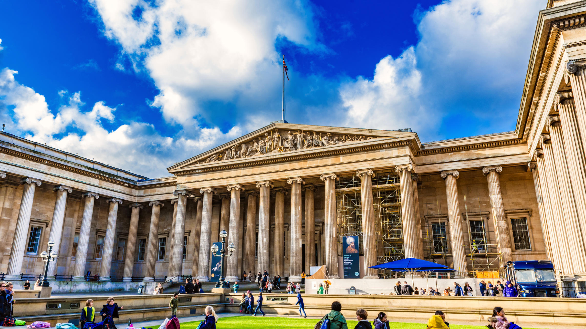
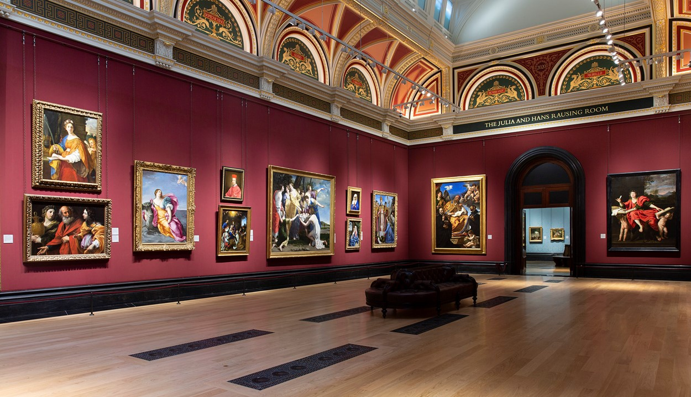
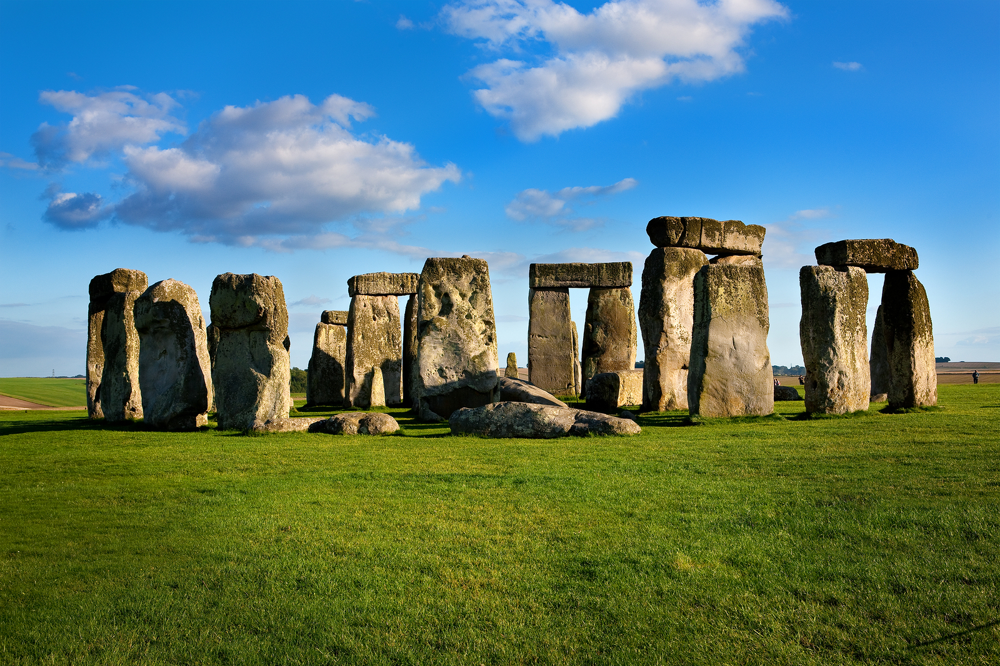

ENGLAND
THE BRITISH MUSEUM
The British Museum is a public museum dedicated to human history, art and culture located in the Bloomsbury area of London. Its permanent collection of eight million works is among the largest and most comprehensive in existence.[3] It documents the story of human culture from its beginnings to the present.[a] The British Museum was the first public national museum in the world.[4]
The Museum was established in 1753, largely based on the collections of the Anglo-Irish physician and scientist Sir Hans Sloane.[5] It first opened to the public in 1759, in Montagu House, on the site of the current building. The museum's expansion over the following 250 years was largely a result of British colonisation and has resulted in the creation of several branch institutions, or independent spin-offs, the first being the Natural History Museum in 1881.

TOWER OF LONDON
The Tower of London, officially Her Majesty's Royal Palace and Fortress of the Tower of London, is a historic castle on the north bank of the River Thames in central London. It lies within the London Borough of Tower Hamlets, which is separated from the eastern edge of the square mile of the City of London by the open space known as Tower Hill. It was founded towards the end of 1066 as part of the Norman Conquest. The White Tower, which gives the entire castle its name, was built by William the Conqueror in 1078 and was a resented symbol of oppression, inflicted upon London by the new ruling elite. The castle was also used as a prison from 1100 (Ranulf Flambard) until 1952 (Kray twins),[3] although that was not its primary purpose. A grand palace early in its history, it served as a royal residence. As a whole, the Tower is a complex of several buildings set within two concentric rings of defensive walls and a moat.

THE NATIONAL GALLERY
Unlike comparable museums in continental Europe, the National Gallery was not formed by nationalising an existing royal or princely art collection. It came into being when the British government bought 38 paintings from the heirs of John Julius Angerstein in 1824. After that initial purchase, the Gallery was shaped mainly by its early directors, especially Charles Lock Eastlake, and by private donations, which now account for two-thirds of the collection.[5] The collection is smaller than many European national galleries, but encyclopaedic in scope; most major developments in Western painting "from Giotto to Cézanne"[6] are represented with important works. It used to be claimed that this was one of the few national galleries that had all its works on permanent exhibition,[7] but this is no longer the case.

STONEHENGE
Stonehenge is a prehistoric monument on Salisbury Plain in Wiltshire, England, two miles (3 km) west of Amesbury. It consists of an outer ring of vertical sarsen standing stones, each around 13 feet (4.0 m) high, seven feet (2.1 m) wide, and weighing around 25 tons, topped by connecting horizontal lintel stones. Inside is a ring of smaller bluestones. Inside these are free-standing trilithons, two bulkier vertical sarsens joined by one lintel. The whole monument, now ruinous, is aligned towards the sunrise on the summer solstice. The stones are set within earthworks in the middle of the densest complex of Neolithic and Bronze Age monuments in England, including several hundred tumuli (burial mounds)

TOWER BRIDGE
Tower Bridge is a Grade I listed combined bascule and suspension bridge in London, built between 1886 and 1894, designed by Horace Jones and engineered by John Wolfe Barry with the help of Henry Marc Brunel.[1] It crosses the River Thames close to the Tower of London and is one of five London bridges owned and maintained by the Bridge House Estates, a charitable trust founded in 1282. The bridge was constructed to give better access to the East End of London, which had expanded its commercial potential in the 19th century. The bridge was opened by Edward, Prince of Wales and Alexandra, Princess of Wales in 1894.